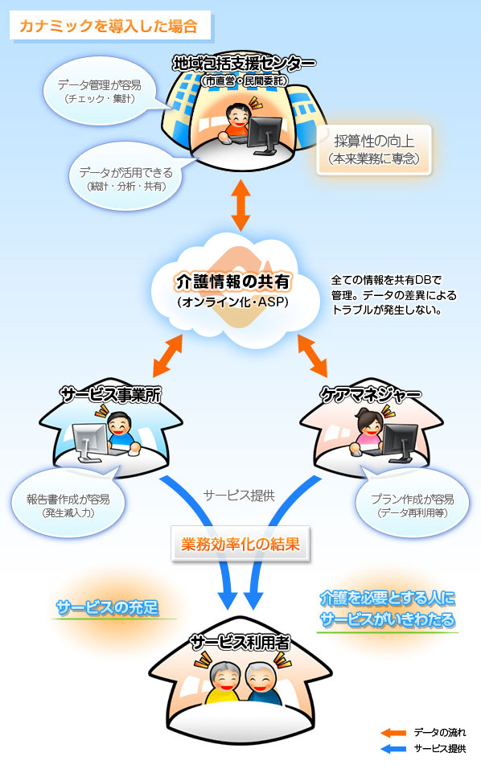
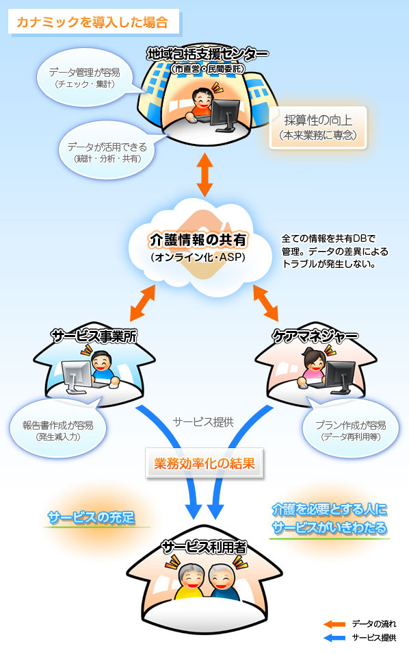

地域包括支援センターシステム
請求データは地域包括支援センターからボタンひとつで一気に集計できます。
システムへの入力時間を大幅削減する事により、窓口対応業務の充実化が図れます。

地域包括支援センターシステムコンセプト
連携先とのやりとり時に発生する膨大な紙運用を解消
地域内で共通システムを利用することで、情報共有し問題点の連携解決が可能です。
スピーディーな実績入力ができ、そのデータを包括職員とケアマネジャー、サービス事業所間で共有できます。
 

利用シーン
【シーン1】
慌しい請求時期の作業が減らせたら
これまでは請求時期に利用者のプラン作成等を再委託したケアマネジャー様から送られてくる提供票を再入力する作業が発生していましたが、 カナミックシステムではインターネットを利用し、 画面上で実績を直接入力することが出来ますので紙の出力、FAX等の通信費が不要になり、包括職員による再入力の手間が大幅に短縮され ます。
【シーン2】
モバイル端末は介護業界でも標準ツールに
機動性を発揮したモバイル端末特有の使い方で、 業務効率とお客様満足度をアップできます。 タブレットを使えば利用者宅で直接介護登録情報・記録等を閲覧・入力することが出来ます。
【シーン3】
相談業務機能で毎月の集計業務から解放されます
地域包括支援センター向け相談業務機能を備えており、一ケ月間の相談業務項目が自動集計されます。相談内容を自由に作成、入力した相談者情報の検索・管理が可能です。
導入事例
システムユーザー実績
の医療法人・介護事業所、
全国でへの導入実績がある安心と信頼のシステムです。
（、無料ユーザーを含む）
東京大学高齢社会総合研究機構（ＩＯＧ） 様
柏プロジェクト -成功の鍵を握る情報ネットワークの重要性-
介護ソフト システムラインアップ


お問合せから導入、アフターフォローまでの流れ

1弊社にお問合せ
まずはお電話か、本サイト内の入力フォームからお問合せください。

2営業担当からご連絡
弊社の営業担当者から、ご連絡させて頂きます。

3ヒアリング、詳細のご案内
介護業界に特化し、多数のソリューション実績を持っている専門の営業マンが、お客様の事業所にお伺いして介護システム及び介護ソフトに関するヒアリング及びご説明をさせて頂きます。 現状の問題点や解決したいポイントを明確にし、介護ソフトによるソリューションをご提案させて頂きます。お気軽にご相談ください。

4ご契約
システムの利用申し込みをして頂きます。

5導入に向けてお客様とご相談
既存システムからのデータ移行や操作教育など、 介護ソフト導入に向けて詳しくスケジュールを立てさせて頂きます。

6ご訪問による操作説明
介護ソフト・システム導入支援専門の部署の社員が訪問させていただき説明を行います。
1度目の訪問でシステム操作説明を、2度目の訪問で請求に関する説明を行います。

7システム運用開始
全てのステップで専門のスタッフが担当させて頂きますので、 安心してシステム導入を出来ます。

8電話サポート
導入後もシステムに精通したカナミックネットワークのスタッフが電話でサポートいたします。
ＰＣ操作に不安のある方も安心です。

9研修会
カナミックネットワークでは月に１度ご希望のユーザー様に向けて社内でシステム研修会を開催しております。
資料を見ながら操作方法などの説明を行い、その場でお客様のご質問にお答えいたします。